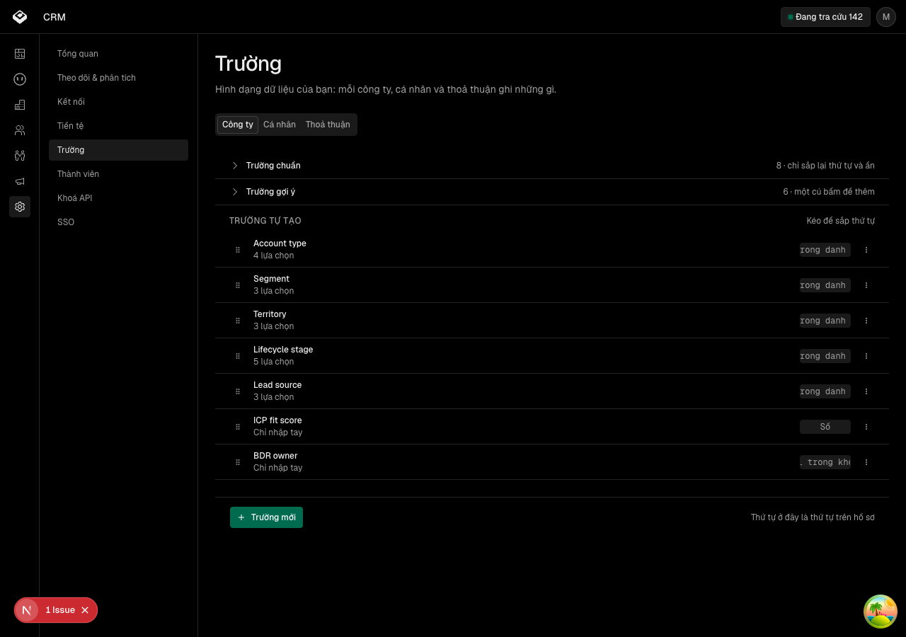

Người quản trị tìm thấy trường tự tạo ở Cài đặt và được gợi ý bộ trường của môi giới Việt
Các eval
| Eval | Tiêu chí | Loại | Verdict | run_id | verified_at |
|---|---|---|---|---|---|
| E1 | AC-6 | script | PASS | — | — |
| E2 | AC-7 | script | PASS | — | — |
| E3 | AC-8 | script | PASS | — | — |
| E4 | AC-13 | script | PASS | — | — |
| E5 | AC-1 | ui-check | PASS | — | — |
| E6 | AC-3 | ui-check | PASS | — | — |
| E7 | AC-4 | script | PASS | — | — |
| E8 | AC-5 | script | PASS | — | — |
| E9 | AC-9 | script (tầng sau) | PASS | — | — |
| E10 | AC-10 | script (tầng sau) | PASS | — | — |
| E11 | AC-11 | script (tầng sau) | PASS | — | — |
| E12 | AC-12 | ui-check | PASS | — | — |
| E13 | AC-5 | test | PASS | — | — |
| E14 | AC-2 | ui-check | PASS | — | — |
| E15 | AC-14 | script (tầng sau) | PASS | — | — |
| E16 | AC-15 | script | PASS | — | — |
| E17 | AC-16 | test | PASS | — | — |
| E18 | AC-15 | script | PASS, 15/15 CA PHÁ THỬ | — | — |
| E19 | AC-17 | script | PASS | — | — |
| E20 | AC-18 | script | PASS | — | — |
| E21 | AC-19 | script (tầng sau) | PASS | — | — |
| E22 | AC-20 | ui-check | PASS | — | — |
Chi tiết từng eval
PASS E1 · script
AC-6: Given bộ gợi ý trường, When đọc nhóm Công ty, Then không còn gợi ý nào của bộ cũ (vùng bán hàng AMER, EMEA, APAC; phân khúc Enterprise, Mid-Market, SMB; giai đoạn Lead, MQL, SQL), và mọi nhãn mới mang dấu tiếng Việt.
PASS E2 · script
AC-7: Given bộ gợi ý trường, When đọc cả ba nhóm Công ty, Cá nhân, Thoả thuận, Then mỗi nhóm có ít nhất bốn gợi ý, và mọi nhãn cùng mọi lựa chọn mang dấu tiếng Việt.
PASS E3 · script
AC-8: Given vòng tiếp thị tuyển đối tác đã gieo chín trường trên Cá nhân với khoá cố định, When đối chiếu bộ gợi ý Cá nhân với chín khoá đó, Then không khoá nào trùng, và phép đo gọi tên đúng khoá trùng nếu có.
PASS E4 · script
AC-13: Given chữ «Trường» là từ mới trên màn hình, When đọc từ điển sản phẩm, Then nó có một mục nêu nghĩa và nêu các từ cần tránh.
PASS E5 · ui-check
AC-1: Given nhân viên đang ở trang Cài đặt, When họ đọc thanh bên, Then một mục mang nhãn «Trường» có mặt, đứng ngay sau mục Tiền tệ, và nhãn đó theo đúng tiếng đang chọn.
PASS E6 · ui-check
AC-3: Given trang Trường vừa mở, When nhân viên chưa bấm gì, Then ba thẻ Công ty, Cá nhân, Thoả thuận có mặt với nhãn tiếng Việt, và thẻ Công ty là thẻ đang mở.
PASS E7 · script
AC-4: Given nhân viên đang mở thẻ Cá nhân, When họ tải lại trang, Then thẻ Cá nhân vẫn là thẻ đang mở, vì thẻ được giữ trên địa chỉ.
PASS E8 · script
AC-5: Given khay trượt quản trị trường được lắp ở bố cục chung của khu làm việc, When nhân viên mở trang Cài đặt › Trường, Then khay trượt KHÔNG hiện trên màn, vì trang dùng nhóm khoá tham số riêng.
PASS E9 · script (tầng sau)
AC-9: Given nhân viên đang ở trang Trường, thẻ Thoả thuận, When họ bấm một gợi ý, Then trường tồn tại qua API với đúng nhãn, đúng kiểu và đúng bộ lựa chọn của gợi ý đó, và nó hiện trong nhóm trường đang dùng. (cross-layer)
PASS E10 · script (tầng sau)
AC-10: Given nhân viên đang ở trang Trường, When họ tạo một trường từ đầu rồi sửa nhãn của nó rồi lưu trữ nó, Then cả ba việc thành công trên trang, không phải chỉ trong khay trượt. (cross-layer)
PASS E11 · script (tầng sau)
AC-11: Given đường vào cũ từ thẻ hồ sơ, When nhân viên mở khay trượt quản trị trường như trước, Then khay vẫn làm được đúng sáu việc của trục việc-người-quản-trị, mỗi việc xác nhận ở tầng sau: xem danh sách, tạo từ gợi ý, tạo từ đầu, sửa nhãn, xếp lại thứ tự, lưu trữ. (cross-layer)
PASS E12 · ui-check
AC-12: Given thực thể đang mở chưa có trường tự tạo nào, When trang hiện danh sách, Then trạng thái rỗng hiện lời «Chưa có trường tự tạo nào» kèm khối gợi ý; và khi danh sách tải lỗi, trang hiện lời lỗi kèm nút thử lại.
PASS E13 · test
AC-5: Given khay trượt quản trị trường được lắp ở bố cục chung của khu làm việc, When nhân viên mở trang Cài đặt › Trường, Then khay trượt KHÔNG hiện trên màn, vì trang dùng nhóm khoá tham số riêng.
PASS E14 · ui-check
AC-2: Given nhân viên đang ở trang Cài đặt, When họ bấm mục Trường, Then trang quản trị trường mở ra với tiêu đề và mô tả bằng tiếng đang chọn, không phải một trang trống.


PASS E15 · script (tầng sau)
AC-14: Given thực thể đang mở đã có trường, When trang hiện danh sách, Then nhóm trường chuẩn của hệ thống và nhóm trường đang dùng đều có mặt với tiêu đề đọc được, nhóm chuẩn có ít nhất một phần tử, và trên thẻ Cá nhân mọi trường mà tầng sau trả về đều hiện trên màn, kể cả trường do bộ cào gieo; và khi người quản trị lưu trữ một trường, nhóm trường đã lưu trữ xuất hiện mang đúng trường đó, còn nhóm đang dùng thôi mang nó. (cross-layer)
PASS E16 · script
AC-15: Given bảng mười lăm gợi ý mà người ký đã chốt tại buổi thiết kế, When đối chiếu bộ gợi ý trong sản phẩm với bảng đó, Then khớp từng dòng: đúng mười lăm gợi ý, mỗi dòng đúng thực thể, đúng nhãn nguyên văn, đúng kiểu, và với kiểu một-trong-danh-sách thì đúng bộ lựa chọn cả về số lượng lẫn thứ tự; không dòng nào ngoài bảng.
PASS E17 · test
AC-16: Given một nhãn trường bằng tiếng Việt có dấu, When hệ thống sinh khoá máy cho trường đó, Then khoá bỏ dấu mà giữ đủ chữ — «Loại hình» thành `loai_hinh`, «Đất nền» thành `dat_nen`, «Địa bàn» thành đúng `dia_ban` là khoá bộ cào khai tay — nên khoá đọc được và phép đối chiếu trùng khoá ở AC-8 mới có nghĩa.
PASS, 15/15 CA PHÁ THỬ E18 · script
AC-15: Given bảng mười lăm gợi ý mà người ký đã chốt tại buổi thiết kế, When đối chiếu bộ gợi ý trong sản phẩm với bảng đó, Then khớp từng dòng: đúng mười lăm gợi ý, mỗi dòng đúng thực thể, đúng nhãn nguyên văn, đúng kiểu, và với kiểu một-trong-danh-sách thì đúng bộ lựa chọn cả về số lượng lẫn thứ tự; không dòng nào ngoài bảng.
PASS E19 · script
AC-17: Given từ điển sản phẩm liệt một số cụm từ vào danh sách cần tránh, When đối chiếu mọi nhãn và mọi lựa chọn của bộ gợi ý với danh sách đó, Then không nhãn nào và không lựa chọn nào chứa một cụm bị tránh, và phép đo đọc danh sách trực tiếp từ từ điển chứ không chép tay.
PASS E20 · script
AC-18: Given chữ «Phân khúc» đã có mục trong từ điển với nghĩa là nhóm cá nhân do một bộ lọc đã lưu chọn ra, When đọc bộ gợi ý, Then không gợi ý nào dùng lại chữ đó cho một nghĩa khác, và trường nói về loại bất động sản mang nhãn nói đúng thứ nó chứa.
PASS E21 · script (tầng sau)
AC-19: Given địa chỉ mang tham số thực thể, ví dụ thẻ Cá nhân, When trang được dựng ở phía máy chủ, Then máy chủ nạp trước danh sách trường của ĐÚNG thực thể đó, nên mở lại hoặc chia sẻ đường dẫn không phải chờ một lượt tải thứ hai; và cả trang máy chủ lẫn thành phần trình duyệt đọc cùng một khai báo tham số. (cross-layer)
PASS E22 · ui-check
AC-20: Given đặc tả giao diện khai ba hành vi bàn phím và khổ hẹp, When người quản trị dùng trang bằng bàn phím ở khổ rộng và mở trang ở khổ 375, Then trang không tràn ngang và ba thẻ bấm được ở cả hai khổ; mũi tên đổi được thẻ và thẻ đang focus có vòng focus thấy được; và Esc đóng ô sửa.
Vòng verify
- Vòng 1, bầy song song, hai lượt: BLOCKED cả hai. Lượt một bắt năm phép đo rỗng
- của chính bộ đo (lệnh khai bằng `node` khi thước cần `bun`; một thước hứa sáu
- việc mà làm hai; một thước bỏ nửa phép đo rồi báo đạt; một thước khẳng định yếu
- hơn điều đã khai; một thước để lại rác mang đúng nhãn gợi ý thật). Lượt hai bắt
- phép đo rỗng thứ sáu (hàm đọc mô tả trang bắt cả tiêu đề) và ba mục ngoài hợp
- đồng. Tất cả đã sửa.
- Vòng 2, làn tuần tự: 25/25 mã thoát 0. Sau vòng đó owner veto dòng bỏ phiên
- thiết kế, phiên thiết kế tìm ra lỗi Esc, và vòng thêm AC-20 cùng thước E22.
- Vòng 3, làn tuần tự ở cây hiện tại: 26/26 mã thoát 0.